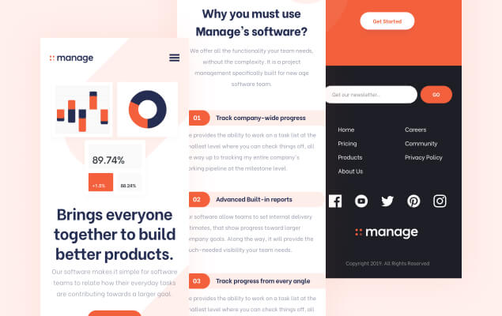
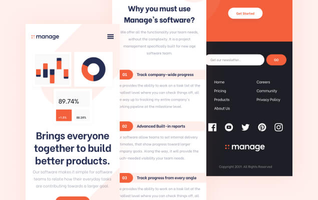

Manage
This project required me to build a fully
responsive landing page to the designs
provided. I used HTML5, along with CSS Grid
and JavaScript for the areas that required
interactivity, such as the testimonial slider.
Project Background
This project was a front-end challenge from Frontend Mentor. It’s a platform that enables
you to practice building websites to a design and project brief. Each challenge includes
mobile and desktop designs to show how the website should look at different screen sizes.
Creating these projects has helped me refine my workflow and solve real-world coding
problems. I’ve learned something new with each project, helping me to improve and adapt
my style.
Static Previews
 
